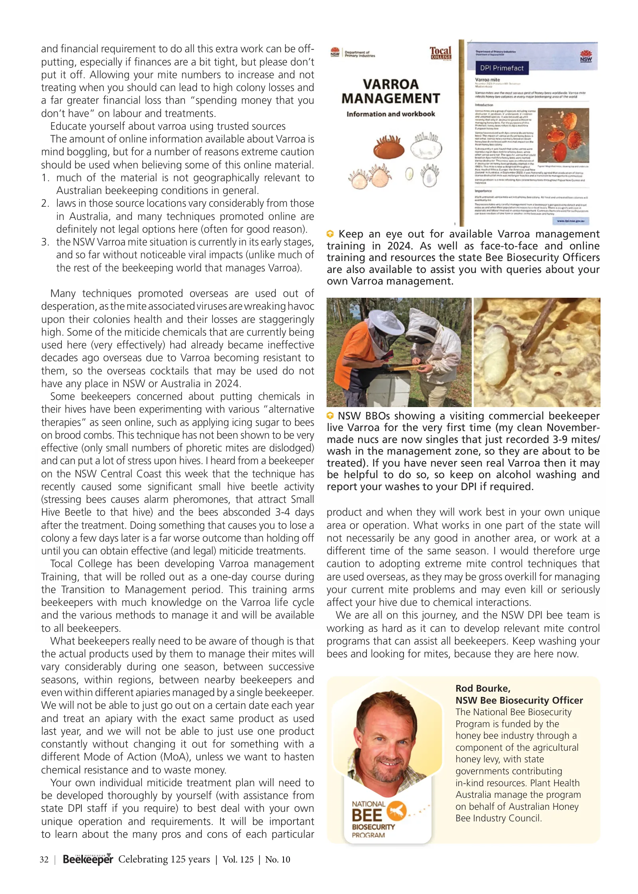

and financial requirement to do all this extra work can be off-
putting, especially if finances are a bit tight, but please don’t
put it off. Allowing your mite numbers to increase and not
treating when you should can lead to high colony losses and
a far greater financial loss than “spending money that you
don’t have” on labour and treatments.
Educate yourself about varroa using trusted sources
The amount of online information available about Varroa is
mind boggling, but for a number of reasons extreme caution
should be used when believing some of this online material.
1. much of the material is not geographically relevant to
Australian beekeeping conditions in general.
2. laws in those source locations vary considerably from those
in Australia, and many techniques promoted online are
definitely not legal options here (often for good reason).
3. the NSW Varroa mite situation is currently in its early stages,
and so far without noticeable viral impacts (unlike much of
the rest of the beekeeping world that manages Varroa).
Many techniques promoted overseas are used out of
desperation, as the mite associated viruses are wreaking havoc
upon their colonies health and their losses are staggeringly
high. Some of the miticide chemicals that are currently being
used here (very effectively) had already became ineffective
decades ago overseas due to Varroa becoming resistant to
them, so the overseas cocktails that may be used do not
have any place in NSW or Australia in 2024.
Some beekeepers concerned about putting chemicals in
their hives have been experimenting with various “alternative
therapies” as seen online, such as applying icing sugar to bees
on brood combs. This technique has not been shown to be very
effective (only small numbers of phoretic mites are dislodged)
and can put a lot of stress upon hives. I heard from a beekeeper
on the NSW Central Coast this week that the technique has
recently caused some significant small hive beetle activity
(stressing bees causes alarm pheromones, that attract Small
Hive Beetle to that hive) and the bees absconded 3-4 days
after the treatment. Doing something that causes you to lose a
colony a few days later is a far worse outcome than holding off
until you can obtain effective (and legal) miticide treatments.
Tocal College has been developing Varroa management
Training, that will be rolled out as a one-day course during
the Transition to Management period. This training arms
beekeepers with much knowledge on the Varroa life cycle
and the various methods to manage it and will be available
to all beekeepers.
What beekeepers really need to be aware of though is that
the actual products used by them to manage their mites will
vary considerably during one season, between successive
seasons, within regions, between nearby beekeepers and
even within different apiaries managed by a single beekeeper.
We will not be able to just go out on a certain date each year
and treat an apiary with the exact same product as used
last year, and we will not be able to just use one product
constantly without changing it out for something with a
different Mode of Action (MoA), unless we want to hasten
chemical resistance and to waste money.
Your own individual miticide treatment plan will need to
be developed thoroughly by yourself (with assistance from
state DPI staff if you require) to best deal with your own
unique operation and requirements. It will be important
to learn about the many pros and cons of each particular
Rod Bourke,
NSW Bee Biosecurity Officer
The National Bee Biosecurity
Program is funded by the
honey bee industry through a
component of the agricultural
honey levy, with state
governments contributing
in-kind resources. Plant Health
Australia manage the program
on behalf of Australian Honey
Bee Industry Council.
Keep an eye out for available Varroa management
training in 2024. As well as face-to-face and online
training and resources the state Bee Biosecurity Officers
are also available to assist you with queries about your
own Varroa management.
NSW BBOs showing a visiting commercial beekeeper
live Varroa for the very first time (my clean November-
made nucs are now singles that just recorded 3-9 mites/
wash in the management zone, so they are about to be
treated). If you have never seen real Varroa then it may
be helpful to do so, so keep on alcohol washing and
report your washes to your DPI if required.
product and when they will work best in your own unique
area or operation. What works in one part of the state will
not necessarily be any good in another area, or work at a
different time of the same season. I would therefore urge
caution to adopting extreme mite control techniques that
are used overseas, as they may be gross overkill for managing
your current mite problems and may even kill or seriously
affect your hive due to chemical interactions.
We are all on this journey, and the NSW DPI bee team is
working as hard as it can to develop relevant mite control
programs that can assist all beekeepers. Keep washing your
bees and looking for mites, because they are here now.
32 |
Celebrating 125 years | Vol. 125 | No. 10